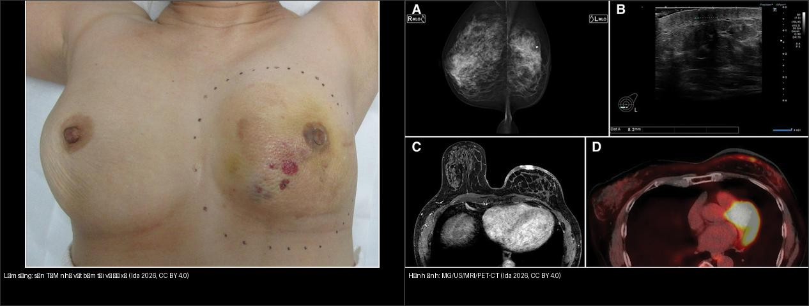
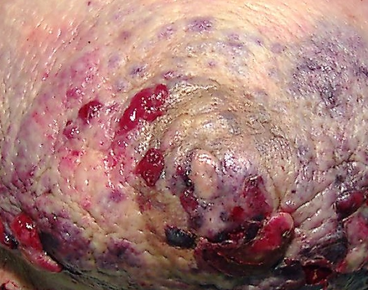
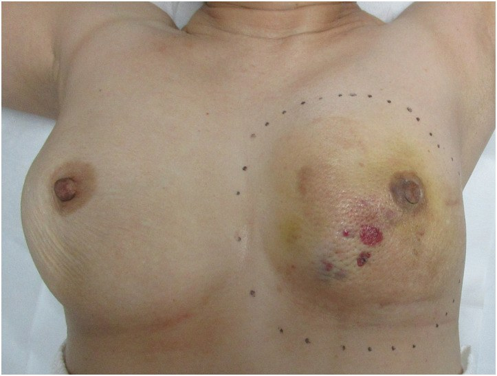
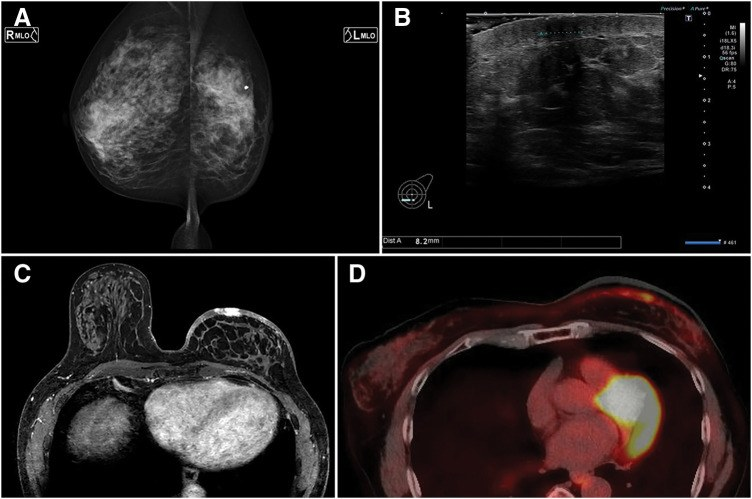
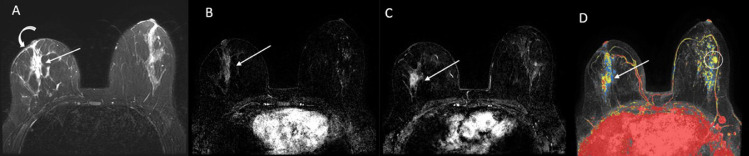
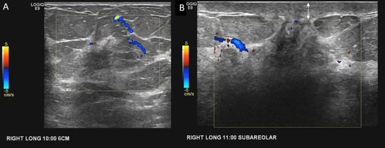
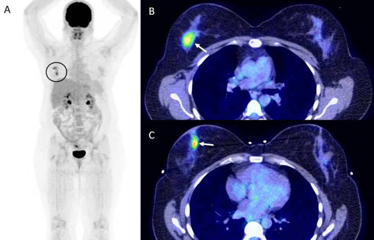
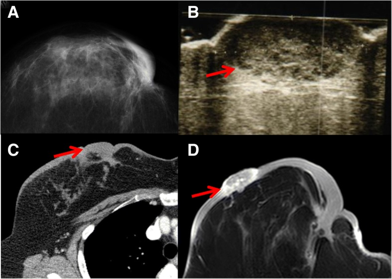
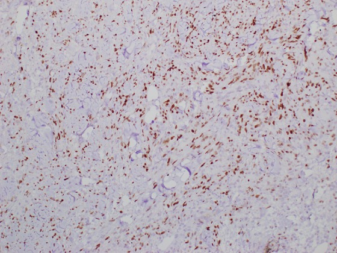
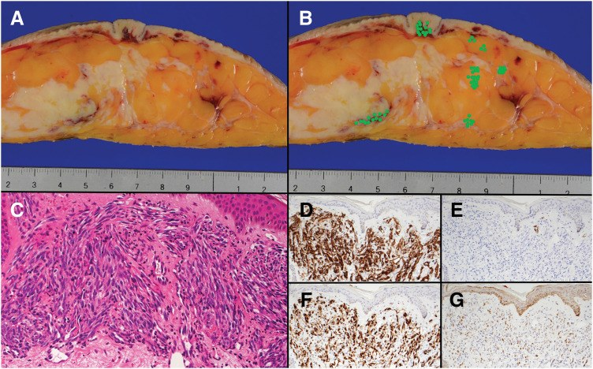

523 — Sarcoma mạch do xạ ở vú (radiation-associated angiosarcoma) & vết tím–bầm dai dẳng sau xạ / Radiation-associated angiosarcoma of the breast
Tags: pattern:sarcoma-mach pattern:vu-sau-dieu-tri pattern:u-tai-phat pattern:dam-da-sau-xa vung:vu score:BI-RADS protocol:MRI-vu protocol:PET-CT incidentaloma:sarcoma-do-xa
Mức chắc chắn (certainty): tổng hợp y văn (literature synthesis) — nhóm tự biên từ y văn mở (Europe PMC/PMC: Radiology Case Reports 2022, Surgical Case Reports 2018 & 2026, Academic Pathology 2020, Therapeutic Advances in Medical Oncology 2025, ESMO Open 2024, Journal of Personalized Medicine 2024, Breast 2024); có các ca nguyên văn đọc trực tiếp từ bài gốc; ảnh minh họa CC BY/BY-NC-ND (giữ nguyên bản với NC-ND).
1. Tổng quan — sarcoma mạch "mọc" trong vùng xạ + cơ chế hình ảnh
- Định nghĩa: sarcoma mạch do xạ (radiation-associated angiosarcoma — RAAS; ở vú: RAASB) là u ác thứ phát nội sinh (iatrogenic) phát sinh trong vùng mô đã chiếu xạ điều trị ung thư vú, sau độ trễ tối thiểu 3 năm (tiêu chuẩn Cahan; PMC6233252): (1) sarcoma nằm trong vùng xạ cũ, (2) mô học KHÁC u vú nguyên phát, (3) độ trễ ≥ 3 năm.
- Đây là "anh em song sinh" ta phải nhớ khi đọc vú đã xạ (bài 516): cùng là "tổn thương mới vùng xạ" nhưng khác hoàn toàn tái phát carcinoma.
- Sinh bệnh học + TẠI SAO trên hình ảnh:
- Bức xạ gây đứt gãy chuỗi kép DNA ở tế bào nội mô bạch mạch/mạch máu → bất hoạt p53 + khuếch đại MYC (8q24) → c-MYC quá biểu hiện thúc đẩy tân mạch. MYC khuếch đại là "dấu ấn" của angiosarcoma thứ phát (gần như 100% ca do xạ), khác angiosarcoma nguyên phát (chỉ một số ít) — dùng MYC IHC/FISH để phân biệt với tổn thương mạch không điển hình (atypical vascular lesion — AVL) lành sau xạ (MYC âm).
- Vì sao đa số ca nằm ở DA: u xuất phát từ nội mô mạch trong da/trung bì (dermis) → biểu hiện sớm nhất là sẩn/mảng tím–xanh, chấm xuất huyết, "như vết bầm" lan rộng. Tính chất mạch máu + xuất huyết giải thích: ngấm thuốc mạnh (mạch), tín hiệu hỗn hợp trên T1/T2 (máu), và dày da/NME trên MRI.
- TẠI SAO dễ bỏ sót trên nhũ ảnh/siêu âm: tổn thương khu trú ở da, nhu mô vú có thể bình thường — Liberman 1992: nhũ ảnh bình thường ở 33% ca angiosarcoma vú (trích trong PMC9340125); Chikarmane: tất cả 16 ca có ngấm ở da nhưng chỉ 25% (4/16) có tổn thương trong nhu mô → MRI là chìa khóa, nhũ ảnh không loại trừ.
- Ngưỡng định lượng bắt buộc:
- Tần suất: angiosarcoma < 1% sarcomas, nhưng vú chiếm ~20% các angiosarcoma toàn thân; angiosarcoma vú ~0,04% u ác vú (PMC13070623); sau BCS 0,005–1,11%; ~0,1% người được xạ; tích lũy 0,9/1000 ca ung thư vú/15 năm (PMC6233252) và ~30 ca/100.000 người–năm sau BCS (PMC11837069).
- Độ trễ: trung vị ~6,5 ± 3,08 năm (PMC11837069), trung bình 7 năm (PMC13488017), đa số 5–10 năm, khoảng 12–291 tháng (PMC11355165).
- Liều xạ: thường 45–60 Gy; trung vị 59,4 Gy (PMC13488017), 57,23 ± 8,34 Gy (PMC11837069).
- Tuổi: lứa thập niên 6–7; trung vị 69 (PMC13488017), 66,2 ± 8,32 (PMC11837069), khoảng 37–93.
- Tiên lượng kém: 5 năm OS 57%, RFS 52% (PMC11179083); trung vị OS 41,7 tháng (1 năm 82,9% / 2 năm 61,7%), PFS trung vị 9,5 tháng (PMC13488017); 5 năm OS 10–54%, LRFS 41–47% (PMC6233252). Tái phát tại chỗ 40–90%; trung vị 6 tháng tới tái phát (PMC6233252), 7 tháng trong các ca Nhật (PMC13070623).
- Yếu tố tiên lượng: thể tích u lớn HR 1,09 và đã di căn lúc chẩn đoán HR 2,98 → OS xấu hơn (PMC13488017).
- Điều trị cải thiện kết cục: cắt rộng toàn bộ vùng xạ (radical resection) 5 năm OS 86% vs 46% (PMC11837069); hóa trị taxane tân bổ trợ: đáp ứng bệnh học hoàn toàn 69%, 3 năm DMFS 100% vs 47,5% (p = 0,005), OS 100% vs 56,1% (p = 0,016) (PMC11550197); xạ + hóa trị (tân) bổ trợ → RFS tốt hơn (HR 0,25 và 0,45) (PMC11179083).
2. Mẫu hình (pattern) + chẩn đoán phân biệt theo bối cảnh (Gamut)
- Khuôn 1 — Da vú đã xạ có vết TÍM/BẦM dai dẳng, lan rộng. Gamut: RAAS vs viêm da do xạ (radiation dermatitis) vs viêm mô tế bào vs tụ máu/huyết thanh tụ vs tái phát carcinoma dạng viêm (inflammatory). Chốt: không tan theo thời gian + ngày càng lan + có sẩn/nốt → sinh thiết SÂU.
- Khuôn 2 — MRI thấy NME/dày da vùng xạ. Gamut: RAAS (ngấm mạnh, theo da) vs biến đổi xạ (phù, ổn định/thoái triển) vs hoại tử mỡ vs viêm. Chốt: ngấm mạnh + dày da lan rộng + tiến triển nghi RAAS; NME là kiểu trình bày dễ bỏ sót (PMC9340125).
- Khuôn 3 — Khối/đám đặc trong nhu mô vú đã xạ. Gamut: tái phát carcinoma vs RAAS (chỉ ~25% có tổn thương trong nhu mô) vs hoại tử mỡ vs xơ. Chốt: mô học + IHC (RAAS: CD31/CD34/ERG +, AE1/AE3 −, MYC +).
- Khuôn 4 — Tổn thương mạch da lành tính (AVL). Gamut: AVL (lành, MYC âm) vs RAAS (MYC +) vs hemangioma. Chốt: MYC IHC/FISH — đây là cái bẫy giải phẫu bệnh quan trọng nhất.
- Khuôn 5 — Bệnh nhân đã cắt toàn bộ tuyến, thành ngực có tổn thương mới. Gamut: tái phát carcinoma thành ngực vs RAAS thành ngực vs di căn da (carcinoma dermal lymphatic) vs lưới/ngực tái tạo. Chốt: sinh thiết + IHC nội mô.
- Gợi nhớ "BRUISE": Bruise-like violaceous skin (tím–bầm), Radiation field (trong vùng xạ), Unresolving (không tan), Increase in size (lan rộng), Sarcoma (RAAS), Endothelial IHC + MYC (+).
3. Bảng so sánh phân biệt (ma trận đối chiếu)
| Thực thể (entity) | Hình ảnh điển hình (nhũ ảnh / siêu âm / MRI–PET) | Chốt vào (rule-in) | Chốt loại (rule-out) | Gợi ý xác nhận |
|---|---|---|---|---|
| Sarcoma mạch do xạ (RAAS) | Vết tím–bầm/sẩn–mảng trong vùng xạ, lan rộng, không tan; MRI: dày da + NME/ngấm mạnh, đôi khi ổ trong nhu mô; PET/CT: ổ tăng chuyển hóa; nhũ ảnh có thể bình thường (33%) | Da tím–bầm KHÔNG tan + tiến triển muộn (≥ 3 năm, trung vị ~7 năm) sau xạ; IHC CD31/CD34/ERG +, AE1/AE3 −, MYC + | Tụ máu tan dần theo thời gian + tiền sử chấn thương + không sẩn → không phải RAAS | Sinh thiết SÂU (không chỉ punch bề mặt) + MYC IHC/FISH |
| Viêm da do xạ (radiation dermatitis) | Đỏ–tăng sắc tố giới hạn đúng trường chiếu xạ, xuất hiện sớm (tuần–tháng), có giai đoạn cấp rồi thoái triển/xơ mạn | Xuất hiện sớm sau xạ + thoái triển + đối xứng theo trường xạ | Lan rộng ngoài trường xạ + có nốt/sẩn + tiến triển → không còn là viêm da xạ | So mốc thời gian + sinh thiết nếu tiến triển |
| Tổn thương mạch không điển hình (AVL) | Sẩn/đám mạch da trong vùng xạ, hình thái giống RAAS nhưng mô học nhẹ | Mô học mạch không điển hình + MYC ÂM | MYC dương → RAAS (không phải AVL) | IHC/FISH MYC bắt buộc |
| Tái phát carcinoma tại da/thành ngực | Sẩn/nốt/loét da, có thể dạng viêm; cùng dòng tế bào với u nguyên phát (ER/PR/HER2, GATA-3 +) | IHC khớp u vú nguyên phát (cytokeratin/GATA-3 +) | CD31/CD34/ERG + + MYC + + cytokeratin − → RAAS | Mô bệnh + so khớp u cũ |
| Huyết thanh tụ / tụ máu (seroma/haematoma) | Dịch khu trú dưới da/thành ngực; MRI T1/T2 tín hiệu dịch/máu; không ngấm (trừ vỏ) | Tín hiệu dịch/máu + không ngấm + co nhỏ dần | Ngấm đặc + tăng kích thước + thành nốt → nghi u | Theo dõi; chọc/chẩn đoán hình ảnh khi nghi |
| Hoại tử mỡ (fat necrosis) | Nang dầu + vôi hóa vỏ; MRI lõi không ngấm + thành phần mỡ | Có thành phần mỡ + lõi không ngấm | Ngấm đặc lõi + DWI sáng → loại hoại tử mỡ | So phim cũ (bài 516) |
| U máu (hemangioma) lành | Nốt mạch lành, tín hiệu T1/T2 sáng như huyết tương, không lan; MRI "ngấm kiểu mạch" đồng nhất | Không liên quan vùng xạ điển hình + mô học lành + MYC âm | MYC dương + lan da + trong vùng xạ → RAAS | Mô bệnh |

Trái: lâm sàng — sẩn/mảng tím như vết bầm kèm nốt đỏ trên da vú đã xạ (dễ bị bỏ qua như "tụ máu/viêm da"). Phải: hình ảnh đa phương thức (nhũ ảnh, siêu âm có nốt ~8,2 mm, MRI, PET/CT) của cùng bệnh nhân — chẩn đoán RAASB. Ảnh ghép letterbox, CC BY 4.0 (Ida E et al., Surgical Case Reports 2026).Dấu hiệu "chốt" phân biệt RAAS vs lành
- MYC là chốt mô bệnh: khuếch đại/quá biểu hiện MYC gần như luôn gặp ở RAAS, âm ở AVL (PMC11355165, PMC7092646, PMC13070623).

Lâm sàng: tổn thương da vú đã xạ — mảng bờ không đều, màu đỏ sẫm–tím (violaceous) kèm loét; "vẻ ngoài như vết bầm/viêm da" khiến dễ bị trấn an nhầm. Nguồn: Manjee K, Sullivan ME, Academic Pathology 2020, Fig. 1, CC BY-NC-ND 4.0 (giữ nguyên bản).- Hình thái da là "cửa sổ" chẩn đoán: sẩn/mảng tím–xanh, chấm xuất huyết, "như vết bầm"/phù nề dai dẳng ở vùng xạ — mọi trường hợp không tan đều phải sinh thiết sâu (gồm cả mô dưới da).
- MRI: ngấm ở da ở mọi ca, tổn thương nhu mô chỉ 25% → nếu chỉ tìm trong nhu mô sẽ bỏ sót.
4. Protocol chẩn đoán – điều trị + lưu đồ
- Khi nào nghi RAAS: vết tím–bầm/mảng/sẩn không tan trong trường xạ cũ của vú/thành ngực, nhất là thập niên 6–7 tuổi, ≥ 3 năm (thường 5–10 năm) sau xạ.
- Cận lâm sàng:
- MRI vú (bắt buộc khi nhũ ảnh/siêu âm không kết luận): đánh giá da, trung bì, nhu mô, thành ngực; tìm NME/dày da/ổ ngấm — dùng để vẽ bản đồ (mapping) phạm vi.
- Siêu âm: khối giảm hồi âm có mạch ngoại vi; có thể thấy nốt nhỏ (ví dụ 8,2 mm).
- PET/CT: ổ tăng chuyển hóa (FDG) — dùng cho phân giai đoạn và phát hiện tổn thương đa ổ/di căn, không thay mô bệnh.
- Sinh thiết SÂU + mapping biopsy: vì tổn thương lan da mờ, sinh thiết bề mặt âm không loại trừ; lấy nhiều điểm (bài PMC6233252 dùng mapping biopsy ở 2 cm và 10 cm từ nốt để xác định ranh giới).
- Chẩn đoán mô bệnh: H&E mạch bất thường + IHC: CD31 (+), CD34 (+), ERG (+), D2-40 có thể âm; AE1/AE3 (−); c-MYC (+), Ki-67 cao (ca PMC13070623: ERG+/CD31+/CD34+/D2-40 −/c-myc +/AE1/AE3 −, Ki-67 ~70%).
- Nguyên tắc điều trị (số liệu):
- Cắt rộng toàn bộ vùng xạ (radical resection) là nền tảng: 5 năm OS 86% vs 46% so với cắt không triệt để (PMC11837069).
- Hóa trị taxane tân bổ trợ (paclitaxel/nab-paclitaxel): đáp ứng bệnh học hoàn toàn 69%, cải thiện DMFS và OS (PMC11550197).
- Xạ trị lại (re-irradiation) có chọn lọc (ví dụ HART) + hóa trị → RFS tốt hơn (HR 0,25–0,45) (PMC11179083).
- Theo dõi sát: tái phát tại chỗ 40–90%, trung vị chỉ 6–7 tháng → chụp theo dõi dày.
flowchart TD
A[Tổn thương mới ở vú/thành ngực ĐÃ XẠ] --> B{Thời gian sau xạ ≥ 3 năm và nằm trong vùng xạ?}
B -->|Không| C[Ưu tiên DDx hậu phẫu sớm: viêm da xạ, huyết thanh tụ, hoại tử mỡ - bài 516]
B -->|Có| D{Da tím-bầm/sẩn KHÔNG tan + tiến triển?}
D -->|Không, tan dần| E[Tụ máu/viêm da xạ - theo dõi, so mốc thời gian]
D -->|Có| F[MRI vú + siêu âm +/- PET-CT: da, nhu mô, thành ngực]
F --> G[Mapping + SINH THIẾT SÂU nhiều điểm]
G --> H{IHC: CD31/CD34/ERG + , cytokeratin - , MYC?}
H -->|MYC dương| I[Xác nhận SARCOMA MẠCH DO XẠ]
H -->|MYC âm, mạch không điển hình| J[AVL lành - theo dõi sát, sinh thiết lại nếu tiến triển]
I --> K[Cắt RỘNG toàn bộ vùng xạ +/- taxane tân bổ trợ +/- xạ lại chọn lọc]
K --> L[Theo dõi dày: tái phát tại chỗ trung vị 6-7 tháng, 40-90%]
5. Biến thể bình thường và cạm bẫy
- Cạm bẫy "chỉ là vết bầm/viêm da xạ": biểu hiện kinh điển là tím–xanh "như vết bầm" → bệnh nhân và bác sĩ dễ trấn an, chẩn đoán muộn trong khi u đã lan rộng; độ trễ 5–10 năm khiến mối liên hệ với xạ bị lãng quên. Quy tắc: vết bầm ở vùng xạ không tan → sinh thiết.
- Cạm bẫy nhũ ảnh bình thường: 33% ca angiosarcoma vú có nhũ ảnh bình thường (Liberman 1992) — nhũ ảnh âm không loại trừ; phải siêu âm/MRI khi có bất thường da.
- Cạm bẫy chỉ tìm tổn thương TRONG nhu mô: tổn thương trong nhu mô chỉ có ở 25% ca (Chikarmane) → đọc kỹ DA trên MRI (dày da, ngấm da).
- Cạm bẫy sinh thiết bề mặt: tổn thương phân bố ở da–trung bì và lan mờ, punch bề mặt có thể âm tính giả → sinh thiết sâu + nhiều điểm (mapping).
- Cạm bẫy AVL lành: tổn thương mạch không điển hình (AVL) sau xạ trông như RAAS trên lâm sàng/hình ảnh nhưng MYC âm và lành → luôn làm MYC khi nghi.
- Cạm bẫy "biến thể tiểu thùy mao mạch" (capillary lobule variant): một biến thể RAAS giả lành trên H&E (đám mạch mao mạch xếp chặt nhiều tiểu thùy) — nhưng tất cả đều MYC dương; dễ bị đọc nhầm u máu lành (PMC10091944).
- Cạm bẫy "u đã hết sau mổ" — tái phát rất sớm: tái phát tại chỗ 40–90%, trung vị ~6–7 tháng → theo dõi dày, không nới lỏng cảnh giác sau cắt.
6. Tự lượng giá — Blind Quiz
Ca 1 — Nữ 63 tuổi, phù nề vú tiến triển 14 năm sau mổ bảo tồn + xạ. Đọc lâm sàng.

- Gợi ý: da vú (bên trái ảnh) có mảng tím kèm nốt đỏ, đường kẻ chấm là rìa dự kiến phẫu thuật.
- Hỏi: biểu hiện này gợi ý gì? Vì sao dễ bị bỏ qua?
Bấm để hiện đáp án (findings + chẩn đoán)
- Dấu hiệu (findings): sẩn/mảng TÍM như vết bầm (purpura) kèm nốt đỏ trên da vú đã xạ, lan rộng, không tan.
- Chẩn đoán (diagnosis): sarcoma mạch do xạ ở vú (RAASB) — biểu hiện kinh điển "vết bầm không tan" ở vùng xạ; bệnh nhân này RAASB xuất hiện 16 năm sau mổ bảo tồn. Dễ bỏ qua vì giống tụ máu/viêm da xạ lành.
- Nguồn ảnh: Ida E et al., Surgical Case Reports 2026, Fig. 1, CC BY 4.0.
Ca 2 — Cùng bệnh nhân: đọc các hình ảnh đa phương thức.

- Gợi ý: (A) nhũ ảnh, (B) siêu âm nốt ~8,2 mm, (C) MRI, (D) PET-CT.
- Hỏi: phương tiện nào phát hiện tổn thương? Vì sao nhũ ảnh có thể bình thường?
Bấm để hiện đáp án (findings + chẩn đoán)
- Dấu hiệu (findings): siêu âm thấy nốt giảm hồi âm ~8,2 mm; MRI có bất thường da/tổ chức; PET-CT có ổ tăng chuyển hóa. Nhũ ảnh ít đặc hiệu vì tổn thương ở da.
- Chẩn đoán (diagnosis): RAASB — tổn thương khu trú ở da nên nhũ ảnh/ih mô nhu mô có thể không thấy (nhũ ảnh bình thường tới 33% ca); MRI + PET-CT đánh giá tốt hơn.
- Nguồn ảnh: Ida E et al., Surgical Case Reports 2026, Fig. 2, CC BY 4.0.
Ca 3 — Ảnh ghép: bên nào là lâm sàng, bên nào là hình ảnh?
- Hỏi: tại sao cần ghép lâm sàng với hình ảnh để chẩn đoán RAAS?
Bấm để hiện đáp án (findings + chẩn đoán)
- Trái = lâm sàng: mảng tím như vết bầm + nốt đỏ ở da vú đã xạ — "cửa sổ" gợi ý RAAS.
- Phải = hình ảnh: nhũ ảnh + siêu âm (nốt ~8,2 mm) + MRI + PET/CT của cùng bệnh nhân — xác nhận tổn thương da và lập bản đồ phạm vi.
- Chốt: lâm sàng mở đường, hình ảnh xác nhận, mô bệnh (MYC) chốt.
- Nguồn: ghép letterbox từ Ida E et al., Surgical Case Reports 2026, Fig. 1 + Fig. 2, CC BY 4.0.
Ca 4 — Nữ sau xạ vú phải, MRI thấy bất thường. Đọc MRI (T2 + T1 sau tiêm).

- Gợi ý: (A) T2, (B) T1 tiêm thì sớm, (C) T1 tiêm, (D) bản đồ màu.
- Hỏi: kiểu tổn thương này (NME + dày da) gợi ý gì? Vì sao dễ nhầm tái phát carcinoma?
Bấm để hiện đáp án (findings + chẩn đoán)
- Dấu hiệu (findings): T2 tăng tín hiệu dạng dải ở vú phải + dày da; sau tiêm có vùng ngấm (NME) tương ứng; bản đồ màu nhấn mạnh vùng ngấm.
- Chẩn đoán (diagnosis): sarcoma mạch do xạ trình bày dạng non-mass enhancement (NME) — ca này ban đầu được đánh giá như bất thường sau mổ; mô bệnh sau đó là angiosarcoma 8,3 × 5,8 × 4,5 cm trong da/nhu mô. Chốt: NME + dày da ở vùng xạ phải nghĩ RAAS.
- Nguồn ảnh: Gonzalez TV et al., Radiology Case Reports 2022, Fig. 1, CC BY-NC-ND 4.0 (giữ nguyên bản).
Ca 5 — Cùng bệnh nhân: đọc siêu âm có Doppler.

- Hỏi: hai khối giảm hồi âm có mạch ngoại vi gợi ý gì? Doppler giúp phân biệt với gì?
Bấm để hiện đáp án (findings + chẩn đoán)
- Dấu hiệu (findings): hai khối giảm hồi âm ở vị trí 10 giờ và 11 giờ (quanh núm) với mạch ngoại vi trên Doppler.
- Chẩn đoán (diagnosis): angiosarcoma (RAASB) — mô u mạch tăng sinh mạch nên có mạch ngoại vi; khối đa ổ là đặc trưng. Doppler giúp phân biệt với nang/dịch không mạch.
- Nguồn ảnh: Gonzalez TV et al., Radiology Case Reports 2022, Fig. 3, CC BY-NC-ND 4.0 (giữ nguyên bản).
Ca 6 — Cùng bệnh nhân: đọc PET/CT.

- Hỏi: PET/CT thêm giá trị gì trong RAAS? Có thay thế sinh thiết không?
Bấm để hiện đáp án (findings + chẩn đoán)
- Dấu hiệu (findings): hai ổ tăng chuyển hóa FDG ở vú phải trên ảnh MIP và lát hợp nhất PET/CT.
- Chẩn đoán (diagnosis): angiosarcoma đa ổ — PET/CT dùng để phân giai đoạn/phát hiện đa ổ, di căn, KHÔNG thay thế mô bệnh; ở ca này khối chính đã lớn (8,3 cm) trên bệnh phẩm cắt tuyến.
- Nguồn ảnh: Gonzalez TV et al., Radiology Case Reports 2022, Fig. 4, CC BY-NC-ND 4.0 (giữ nguyên bản).
Ca 7 — Nữ có khối da vú đã xạ. Đọc nhũ ảnh, siêu âm, CT, MRI.

- Gợi ý: mũi tên chỉ tổn thương ở da trên cả 4 phương tiện.
- Hỏi: dấu hiệu nào xác định tổn thương ở da chứ không phải nhu mô? Bước tiếp theo?
Bấm để hiện đáp án (findings + chẩn đoán)
- Dấu hiệu (findings): khối dày lên ngay dưới/trong da (mũi tên) thấy trên cả nhũ ảnh, siêu âm, CT, MRI — vị trí da/trung bì, không phải khối nhu mô sâu.
- Chẩn đoán (diagnosis): sarcoma mạch do xạ — tổn thương khu trú ở da là đặc trưng; cần mapping biopsy (2 cm và 10 cm) để xác định ranh giới trước khi cắt rộng.
- Nguồn ảnh: Nomoto Y et al., Surgical Case Reports 2018, Fig. 1, CC BY 4.0.
Ca 8 — Mô bệnh học: đọc IHC.

- Hỏi: hình này là gì, và vì sao nó là "chốt" phân biệt RAAS với tổn thương mạch lành (AVL)?
Bấm để hiện đáp án (findings + chẩn đoán)
- Dấu hiệu (findings): nhuộm MYC dương tính ở NHÂN (nhân nâu) trong tế bào nội mô u.
- Chẩn đoán (diagnosis): sarcoma mạch do xạ (MYC quá biểu hiện) — MYC khuếch đại/quá biểu hiện gần như luôn gặp ở RAAS và âm ở tổn thương mạch không điển hình (AVL); đây là dấu ấn phân biệt mấu chốt.
- Nguồn ảnh: Manjee K, Sullivan ME, Academic Pathology 2020, Fig. 7, CC BY-NC-ND 4.0 (giữ nguyên bản).
Ca 9 — Bệnh phẩm cắt rộng: đối chiếu đại thể và vùng c-Myc (+).

- Hỏi: (A) đại thể, (B) các điểm xanh = vùng c-Myc dương — ý nghĩa của việc vẽ bản đồ c-Myc trước/khi mổ?
Bấm để hiện đáp án (findings + chẩn đoán)
- Dấu hiệu (findings): đại thể khối xâm nhập lan dưới da; bản đồ đánh dấu vùng c-Myc dương cho thấy u lan rộng hơn vùng thấy bằng mắt.
- Chẩn đoán (diagnosis): c-Myc giúp xác định RANH GIỚI u (u mạch lan mờ dễ dẫn tới cắt không hết bờ → tái phát 40–90%); đây là lý do cắt rộng toàn bộ vùng xạ cho kết cục tốt hơn (5 năm OS 86% vs 46%).
- Nguồn ảnh: Ida E et al., Surgical Case Reports 2026, Fig. 3, CC BY 4.0.
Bài liên quan chéo
- 500 – Tổng quan Hệ Vú & Sản Phụ khoa
- 516 – Hình ảnh vú sau điều trị: tái tạo, hoại tử mỡ, sẹo vs tái phát & BIA-ALCL
- 522 – Theo dõi sau điều trị ung thư vú: nhũ ảnh/DBT, siêu âm, MRI & CEM
- 376 – U phần mềm KHÔNG mỡ: schwannoma vs sarcoma myxoid
Ảnh
images/523_sarcoma-mach-vu_lam-sang_PMC13070623.jpg,images/523_sarcoma-mach-vu_MG-US-MRI-PET_PMC13070623.jpg,images/523_sarcoma-mach-vu_dai-the-cMyc_PMC13070623.jpg,images/523_sarcoma-mach-vu_MRI-T2-DCE_PMC9340125.jpg,images/523_sarcoma-mach-vu_US-Doppler_PMC9340125.jpg,images/523_sarcoma-mach-vu_PET-CT_PMC9340125.jpg,images/523_sarcoma-mach-vu_lam-sang_PMC7092646.jpg,images/523_sarcoma-mach-vu_MYC-IHC_PMC7092646.jpg,images/523_sarcoma-mach-vu_MG-US-CT-MRI_PMC6233252.jpg,images/composite_lam-sang-vs-hinh-anh.jpg. Nguồn + giấy phép từng ảnh trongimages/CREDITS.md.
Không dùng để chẩn đoán độc lập khi chưa có người hướng dẫn.